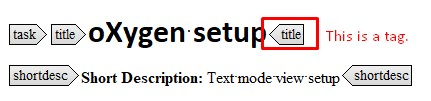

WORKING WITH DOCUMENTS
Setting up the oXygen Preferences
Configuration
- To open the preferences dialog box, go to Options→ Preferences.
- Go to Editorsection and activate the Whitespaces options
- In Editorsection go to Edit Modes→ Text and select Show print marginand Line wrap
- Next go to Editor → Format and select Format and ident the document on open
-
Now go to Full tagsoptions and select Full Tags
Figure 1. Full Tags Options 
Figure 2. Tags in the author view  -
Remember to save your changes during writing. A star * in the Editor tab
indicates unsaved changes.
Figure 3. Unsaved changes